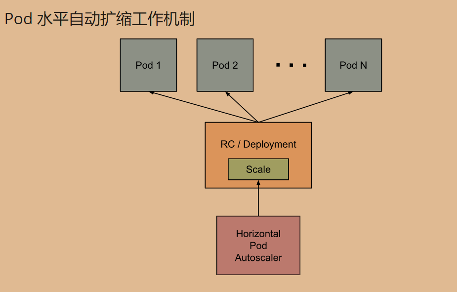
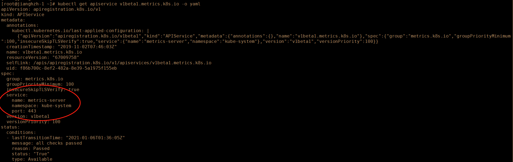
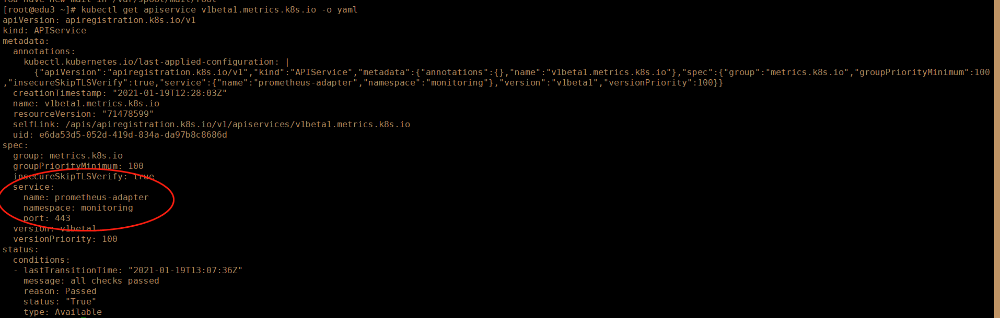
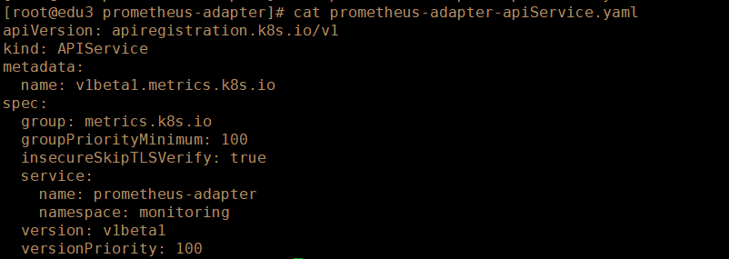
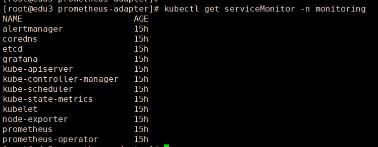
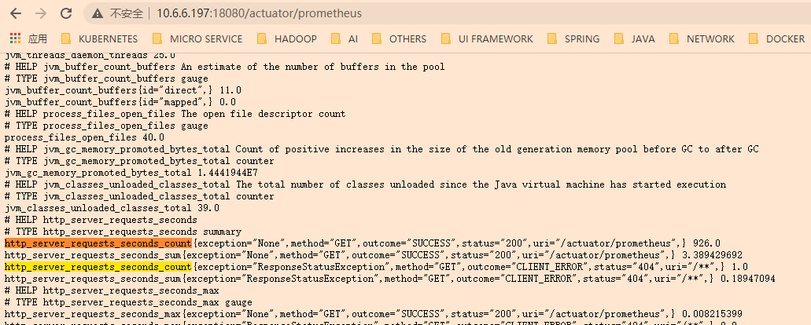
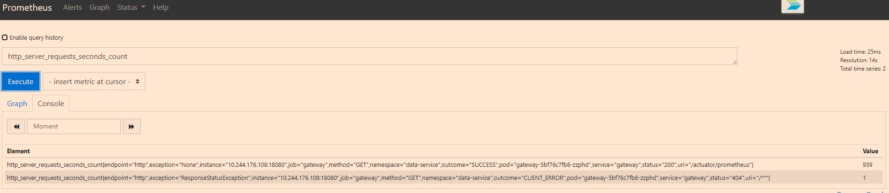
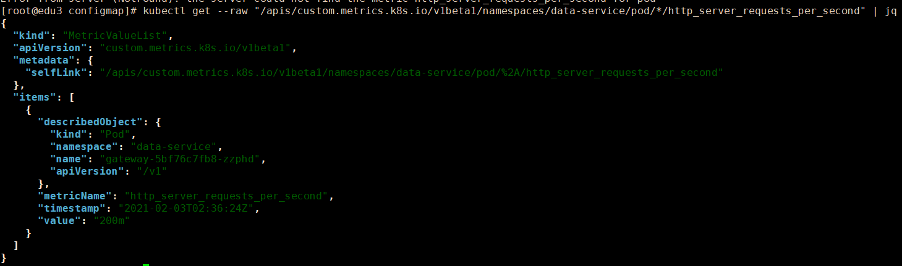

HPA基础
Pod 水平自动扩缩的工作机制

Pod扩缩特性，由K8S的API资源和控制器实现，资源决定了控制器的行为，控制器会周期型地调整副本控制器中副本的数量，以使Pod的资源使用情况，符合用户设定的目标值，Pod自动扩缩不适用于无法扩缩的对象，例如DaemonSet。
K8S聚合API的功能，提供了一种API的注册机制，使得API Server可以代理自定义指标的访问，将实际请求转发给对应的Service，然后Service的后端指向指标服务器，这其中包括了Metrics Server、我们自定义的Prometheus adapter。这里是通过下面命令查看对应的Service：
1 | kubectl get apiservices.apiregistration.k8s.io |
这里以Metrics Server中的v1beta1.metrics.k8s.io API资源为例，查看情况：

这是部署kube prometheus之前apiservice的指向情况，部署之后的指向情况如下：

这里可以看出，部署了kube prometheus后，聚合api的代理统一通过adapter来实现。我们在部署的yaml清单中也能发现相关文件：

整体流程

了解了HPA的工作的工作机制后，下面来梳理一下HPA + Kube Prometheus的大概工作流程：
（1）首先prometheus通过定义的serviceMonitor收集了K8s中绝大部分的指标。

（2）prometheus adapter对prometheus中的指标进行了K8s API的适配，将其指标通过K8s apiservice的方式暴露出来。
（3）HPA的控制器（HorizontalPodAutoscaler）会从一系列的api中获取度量值，在启用了API聚合层的情况下：
对于资源指标，使用metrics.k8s.io API，一般由metric service提供。
对于自定义指标，使用custom.metrics.k8s.io API，一般由其他厂商提供adapter的API服务器提供。
对于外部指标。使用external.metrics.k8s.io API，可能由上面的自定义指标适配器提供。
（4）HPA 度量指标类型：
Resource：指的是当前伸缩对象下的pod的cpu和memory指标，只支持Utilization和AverageValue类型的目标值.
只要metrics.k8s.io API存在，他们就是可用的。
Object：指的是指定k8s内部对象的指标，数据需要第三方adapter提供，只支持Value和AverageValue类型的目标值。
Pods：指的是伸缩对象Pods的指标，数据需要第三方的adapter提供，只允许AverageValue类型的目标值。
Object、Pods被认为是custom.metrics.k8s.io API
External：指的是k8s外部的指标，数据同样需要第三方的adapter提供，只支持Value和AverageValue类型的目标值。
HPA 应用实践
这里依然采用kube-prometheus进行实验。
基于CPU、内存
（1）使用内存、CPU创建HorizontalPodAutoscaler对象
1 | apiVersion: autoscaling/v2beta1 |
1 | kubectl apply -f hpa.yml |
（2）增加scaleTargetRef对象的负载，观察效果，最终的扩容结果，会以同时满足两个指标情况为最终扩容结果。
使用HPA进行扩缩容管理时，如果手动对Deployment进行scale，会出现缩容失败的情况，同时官方也指出，绑定了HPA的滚动升级，HPA不能工作。
中文官方文档
基于自定义指标
（1）首先需要在应用中自定义指标，并收集到prometheus中，在监控一节已经详细说明，可参照。
（2）本例选用 actuator 中的http_server_requests_seconds_count作为示例指标。通过NodePort暴露应用的监控信息如下：

（3）将指标收集到prometheus后，可以在UI界面查询到应用的对象，和该指标情况：

（4）通过定义adapter的configMap，将该指标通过K8s API暴露出来。configMap定义：
1 | apiVersion: v1 |
这是一个带参数的 Prometheus 查询，其中：
seriesQuery：查询 Prometheus 的语句，通过这个查询语句查询到的所有指标都可以用于 HPAseriesFilters：查询到的指标可能会存在不需要的，可以通过它过滤掉。resources：通过seriesQuery查询到的只是指标，如果需要查询某个 Pod 的指标，肯定要将它的名称和所在的命名空间作为指标的标签进行查询，resources就是将指标的标签和 k8s 的资源类型关联起来，最常用的就是 pod 和 namespace。有两种添加标签的方式，一种是overrides，另一种是template。overrides：它会将指标中的标签和 k8s 资源关联起来。上面示例中就是将指标中的 pod 和 namespace 标签和 k8s 中的 pod 和 namespace 资源关联起来（相当于从指标中拿到了label，就可以kubectl get pods -n xxx pod_name 来查询？），因为 pod 和 namespace 都属于核心 api 组，所以不需要指定 api 组。当我们查询某个 pod 的指标时，它会自动将 pod 的名称和名称空间作为标签加入到查询条件中。比如nginx: {group: "apps", resource: "deployment"}这么写表示的就是将指标中 nginx 这个标签和 apps 这个 api 组中的deployment资源关联起来；template：通过 go 模板的形式。比如template: "kube_<<.Group>>_<<.Resource>>"这么写表示，假如<<.Group>>为 apps，<<.Resource>>为 deployment，那么它就是将指标中kube_apps_deployment标签和 deployment 资源关联起来。
name：用来给指标重命名的，之所以要给指标重命名是因为有些指标是只增的，比如以 total 结尾的指标。这些指标拿来做 HPA 是没有意义的，我们一般计算它的速率，以速率作为值，那么此时的名称就不能以 total 结尾了，所以要进行重命名。matches：通过正则表达式来匹配指标名，可以进行分组as：默认值为$1，也就是第一个分组。as为空就是使用默认值的意思。
metricsQuery：这就是 Prometheus 的查询语句了，前面的seriesQuery查询是获得 HPA 指标。当我们要查某个指标的值时就要通过它指定的查询语句进行了。可以看到查询语句使用了速率和分组，这就是解决上面提到的只增指标的问题。Series：表示指标名称LabelMatchers：附加的标签，目前只有pod和namespace两种，因此我们要在之前使用resources进行关联GroupBy：就是 pod 名称，同样需要使用resources进行关联。
在K8s集群中，应用上述configMap，通过API查看自定义指标是否生效。
1 | kubectl get --raw "/apis/custom.metrics.k8s.io/v1beta1/namespaces/{namespace}/pod/*/http_server_requests_per_second" | jq |

（5）在cpu、内存的基础上追加自定义指标，根据实际情况设定指标值
1 | apiVersion: autoscaling/v2beta1 |
（6）观察Pod扩缩容情况。